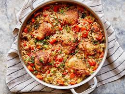

Rice chicken

INGREDIENTS
- 2 tablespoons canola oil
- 4 to 6 bone-in, skin on chicken thighs (about 6 ounces each)
- 1/2 teaspoon paprika
- Kosher salt and freshly ground black pepper
- 4 medium carrots (about 12 ounces), sliced into 1/4-inch rounds
- 3 stalks celery (about 9 ounces), sliced 1/4-inch thick
- 2 large shallots (about 4 ounces), finely diced
- 2 cloves garlic, minced
- 1 tablespoon fresh thyme leaves, chopped
- 1 tablespoon fresh oregano leaves, chopped
- 2 teaspoons finely grated lemon zest plus 1 tablespoon lemon juice
- 1 cup long-grain rice
- 4 cups low-sodium chicken stock
- 1 tablespoon chopped fresh chives
Procedure
- Preheat the broiler. Heat 1 tablespoon of the oil in a
large skillet over medium-high heat. Toss the chicken
with the paprika, 1 teaspoon salt and a few grinds of
pepper in a large bowl. Place the chicken skin-side down
in the skillet and cook undisturbed until the skin is golden
but not too dark, 4 to 5 minutes. Remove the chicken to a plate
using a metal spatula and add the remaining 1 tablespoon oil to the skillet.
-
Add the carrots, celery and shallots to the skillet and cook, stirring
occasionally, until softened but not yet turning golden, 4 to 5 minutes.
Stir in the garlic, thyme, oregano, lemon zest, lemon juice, 1/2 teaspoon
salt and a few grinds of pepper and cook just until you begin to smell the
garlic, about 1 minute. Stir in the rice and cook undisturbed until lightly
toasted, about 2 minutes. Pour in the broth, add 1/2 teaspoon salt and stir to
combine, then add the chicken thighs back to the pan, skin-side up. Bring the
liquid to a boil then cover, reduce the heat to a simmer and cook until the rice
is tender and the chicken is cooked through, 15 to 20 minutes.
- Remove the lid from the pan and broil until the chicken skin is crispy and golden, 2 to 3 minutes. Sprinkle with the chives.
SHAWARMA

INGREDIENTS
- 2 lemons, 1 juiced, 1 cut into wedges to serve
- 150g pot natural yogurt
- 4 garlic cloves
- thumb-sized piece ginger, roughly chopped
- 1-2 green chillies (depending on how hot you like it)
- small pack of fresh coriander
- ½ tsp turmeric
- 1 tsp ground cumin
- 1 tsp garam masala
- 16 skinless, boneless chicken thighs
- 1 large baking potato, cut in half lengthways
- 6 shop-bought naan bread
Procedure
- Tip all the ingredients, except the chicken and lemon wedges,
into a blender or a smoothie bullet with 1 tsp sea salt and whizz
to a smooth paste. Pile the chicken into a bowl or large plastic container
, pour over the paste and mix through so the chicken is completely coated.
Cover and marinate for at least 4 hrs or up to 48 hrs – the longer, the better.
- Heat the oven to 220C/200C fan/gas 8. Sit the kebab across a roasting
tin so it is suspended, or rest a wire rack over a roasting tin and place
the chicken on top. Cook for 45-55 mins or until cooked through.
- Warm the naan on the barbecue or in the oven.
Bring the kebab to the table to carve, wrap with warm naans,
and serve with the other salads and lemon wedges for squeezing over.